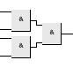
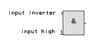

Sélectionnez les composants dans la barre latérale de gauche et placez-les sur le plan de travail.
Pour les connecter cliquez sur la sortie d'un composant (du côté droit) et tirez un câble vers l'entrée de l'autre composant (du côté gauche).
Enfoncez la touche Shift en cliquant sur un câble pour connecter un nouveau câble à cet endroit.
Les composants et les câbles peuvent être sélectionnés en cliquant dessus et effacés avec la touche DEL.
Vous pouvez changer la configuration de certains composants (Boutons, Horloge, Monostable, Afficheur, etc.) en sélectionnant "Propriétés" dans le menu contextuel.
Il est possible de changer le nombre d'entrée pour certains composants (AND, OR, XOR, etc.) avec la liste déroulante placée sous la liste des composants.
Ces composants agiront comme s'ils étaient connectés ainsi :

Entrées de composants

Avec l'option "Entrée inversée" (dans la liste des composants) on peut inverser le niveau d'un câble à l'entrée d'un composant. Pour mettre en place une inversion, sélectionnez-la dans la barre latérale et cliquez sur une entrée de composant.
Une entrée peut être configurée à un niveau défini en utilisant les options "Entrée au niveau haut" ou "Entrée au niveau bas" sans avoir besoin de leur connecter un câble.
Pour rétablir le comportement normal de l'entrée, utilisez l'option "Entrée normale".
Un module est un shéma LogicSim complet qui peut être réutilisé comme un simple composant.
Sélectionnez l'option "Créer un module" du menu "Module". Dans la boite de dialogue "Propriétés du module", saisissez le nom sous lequel le fichier du module sera enregistré et la description de celui-ci. L'étiquette est la légende qui sera affichée sur le symbole du module.
Après avoir cliqué sur le bouton "Valider" deux composants, "input" et "output", vont apparaître. Ils représentent les entrées et sorties du module. Connectez-leur votre shéma. Vous pouvez ajouter des boutons en entrée et des LED en sortie pour tester le module.
Après avoir sauvegardé votre module avec le bouton "Enregistrer" il apparaîtra dans la liste des circuits et pourra être utilisé comme un nouveau composant.
Ouvrez "FullAdder.mod" situé dans le répertoire "modules" pour voir un exemple. Ce module est utilisé dans le shéma "5 Bit Adder.lsim".